Un territoire vécu fragmenté
Arr. A
Arr. B
Arr. C
Un même ensemble intercommunal dépend de plusieurs arrondissements.
Note immersive · IHEMI
La réinvention de l’accueil des usagers
Cette note éditoriale augmentée constitue le second volet du dossier sur la notion de proximité dans l’action publique. Celle-ci a connu des changements profonds au cours de ces dernières années. Les parcours d’accueil des usagers se sont diversifiés : du guichet comme forme principale, on est passé à une combinaison d’accueils physique, numérique, accompagné et itinérant, où l’innovation publique consiste à adapter les modes d’accès aux besoins réels des usagers et aux contraintes des territoires.
Entrer dans la note →La note s’organise en trois temps : un maillage préfectoral et sous-préfectoral, une mise sous tension du guichet, puis une réinvention de la proximité par l’accompagnement et l’aller-vers.
Le maillage préfectoral et sous-préfectoral donne à l’État une capacité d’ancrage, de coordination et d’accueil.
La numérisation transforme les parcours administratifs et fait apparaître de nouveaux besoins d’accompagnement.
L’accueil peut désormais être physique, numérique, téléphonique, fixe, itinérant ou accompagné.
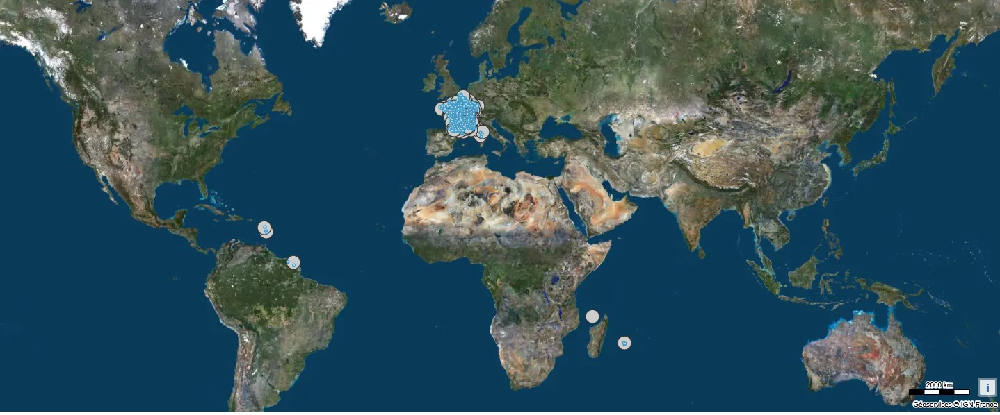
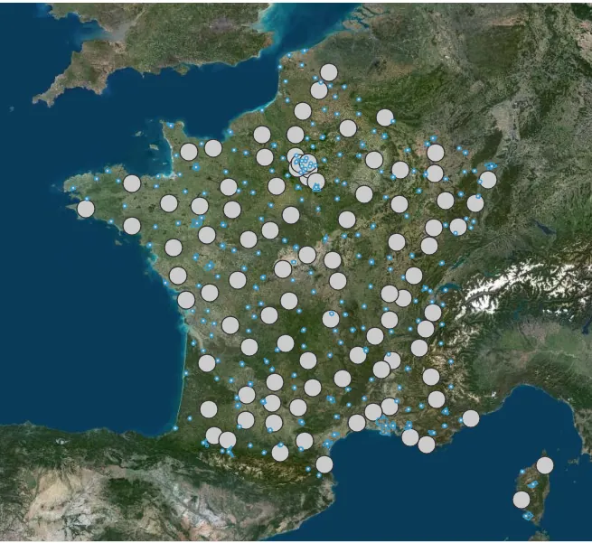
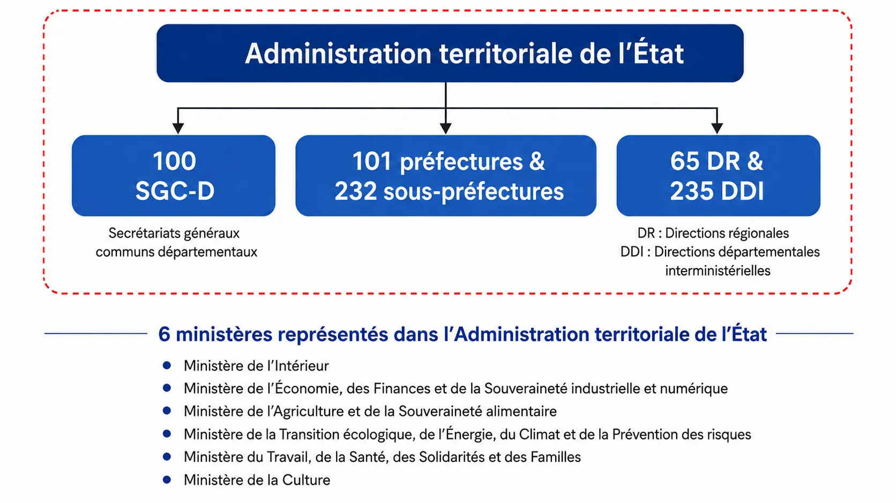
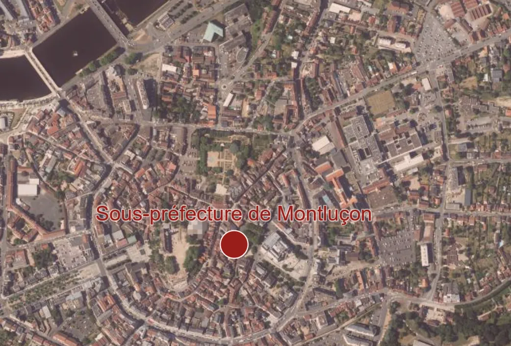
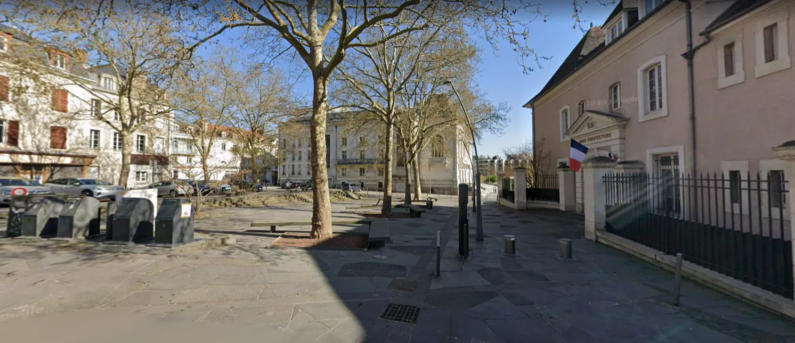
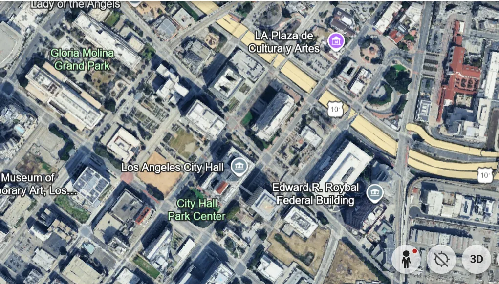
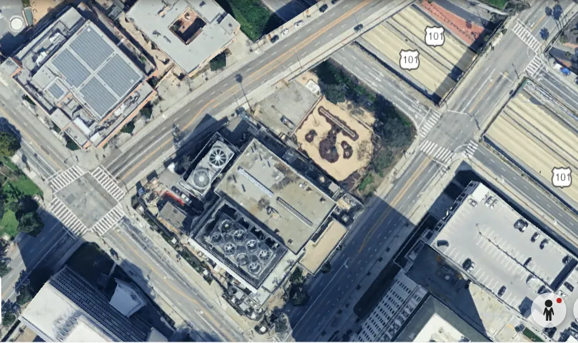
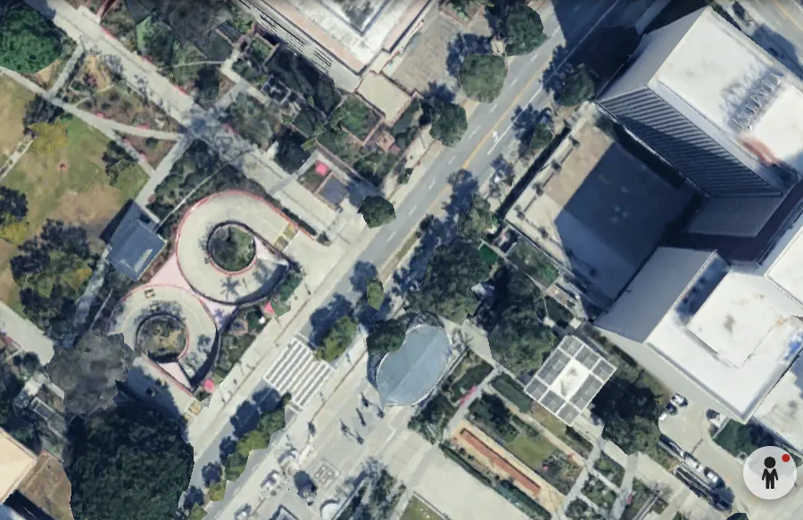
Passer d’un territoire intercommunal fragmenté à un rattachement plus cohérent.
Un même ensemble intercommunal dépend de plusieurs arrondissements.
Les communes concernées relèvent d’un même périmètre administratif.
La présence territoriale de l’État reste un point d’appui. Mais l’accueil des usagers se transforme lorsque les démarches quittent progressivement le guichet pour passer par les plateformes, les téléprocédures et les accès numériques.
Le schéma distingue clairement le socle historique de proximité et les dynamiques qui obligent à recomposer les parcours d’accès.
La frise progresse de gauche à droite pour faire apparaître, sans les confondre, les principaux mouvements qui ont reconfiguré l’accueil.
La rationalisation de l’action publique et la recherche d’une meilleure lisibilité administrative modifient l’organisation des services.
Le Plan préfectures nouvelle génération réoriente une partie des activités préfectorales et accélère la bascule de certaines démarches.
Les démarches en ligne se généralisent, avec l’idée de fluidifier les parcours, d’augmenter la disponibilité des services et de réduire les déplacements.
La progression du numérique ne supprime ni les écarts d’autonomie, ni les contraintes de mobilité, ni les besoins d’accompagnement dans les démarches.
La tendance générale montre la progression des démarches administratives accomplies sur internet.
Le graphique rappelle qu’une part importante des usagers a encore besoin d’aide pour accomplir ses démarches en ligne.
Lorsque l’accès au service ne va plus de soi, la proximité doit être reconstruite : par l’accompagnement, par la médiation, par l’itinérance et par des formes d’accueil capables de rejoindre les usagers là où ils vivent.
La séquence visuelle part du rapport, resserre l’attention sur l’expression centrale, puis met en avant la définition du « dernier kilomètre » avant de faire apparaître les dessins du Conseil d’État.
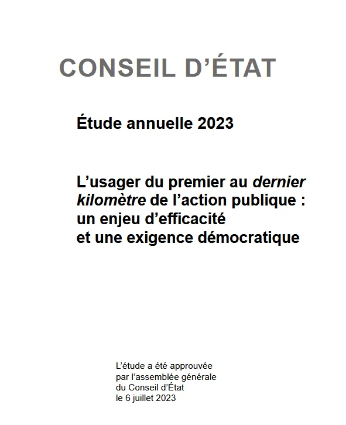
« elle désigne ici la capacité d’une politique publique ou d’un service public à atteindre effectivement les personnes auxquelles il s’adresse »
L’enjeu n’est donc pas seulement de concevoir une mesure ou d’ouvrir une procédure, mais de faire en sorte qu’elle soit réellement atteignable, compréhensible et utilisable.
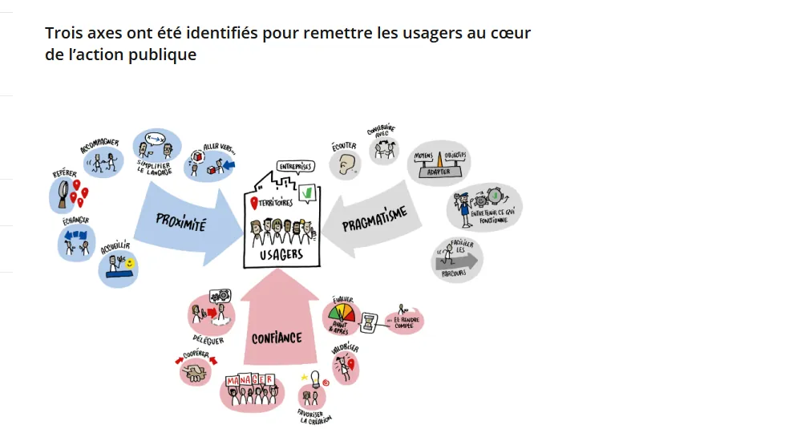
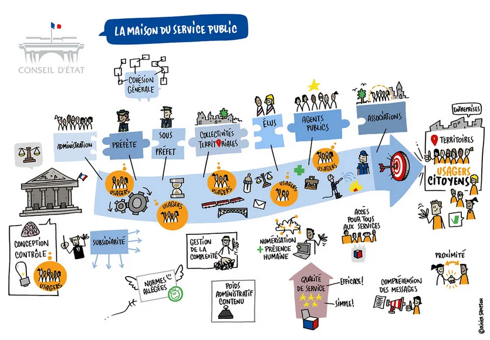
La proximité repose sur un réseau d’opérateurs et de services mobilisables dans un même lieu.
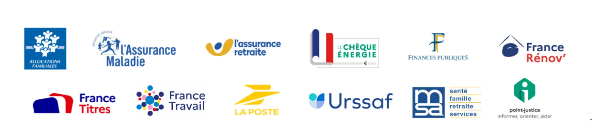
La proximité de demain ne reposera pas sur une seule forme d’accès. Elle combinera présence, accompagnement, mobilité et mise en réseau des ressources.
Le maintien à domicile impose des services plus mobiles, plus attentifs et davantage tournés vers l’accompagnement.
Les parcours quotidiens se déploient à plusieurs échelles : proximité du voisinage, centralités locales, accès plus lointains.
Proximité géographique, d’usage, relationnelle et d’accompagnement doivent être articulées plutôt qu’opposées.
Les réseaux permettent d’accéder à des ressources rares, à des services spécialisés et à des opportunités plus éloignées.
L’enjeu n’est pas de choisir entre présence locale et organisation en réseau, mais de les articuler pour rendre l’action publique plus accessible.
Références mobilisées dans la note.